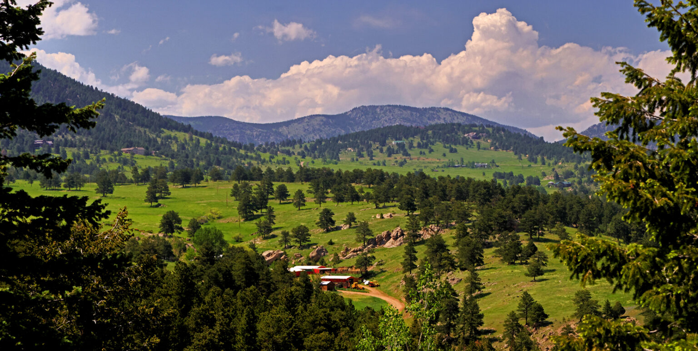
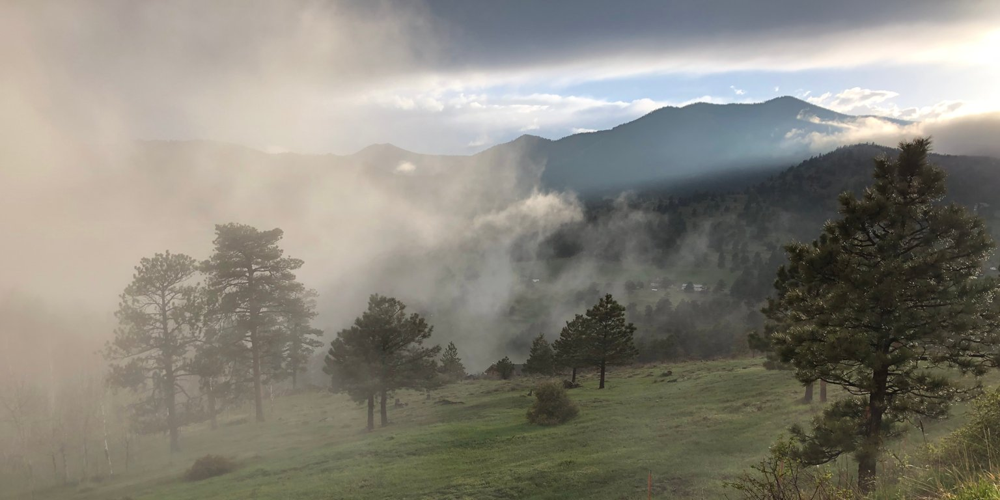
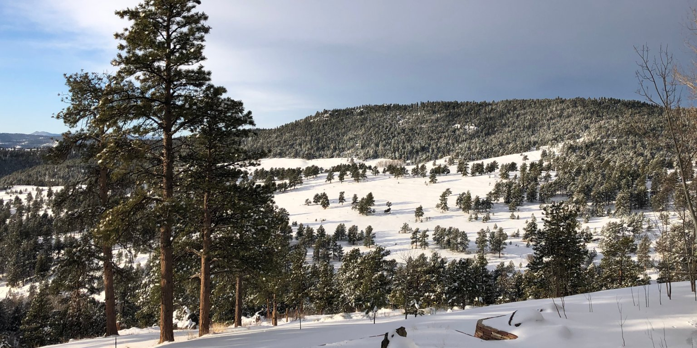
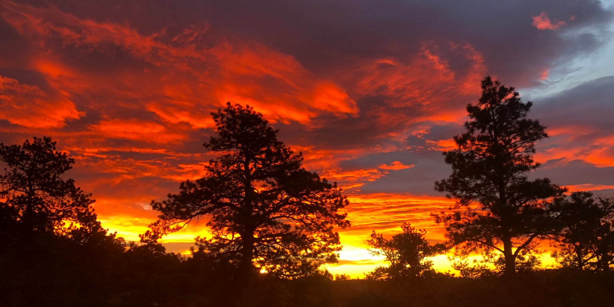

A-35 Coalition of Golden Gate Canyon
History of A-35 Zoning
In 1996, 87% of the landowners owning 92% of the land off Crawford Gulch and Drew Hill Roads petitioned Jefferson County to rezone 10,000 acres by developing A-35 zoning then applying it to their properties.
What brought this about was a developer who had purchased water augmentation rights in Arvada, saying that she bought enough rights to put 500 homes along Crawford Gulch and Drew Hill Roads. She had already purchased 60 acre property and was in the process of subdividing that property.
There were already many concerns in the area about the availability of water. Some wells in Crawford Gulch were already beginning to struggle. Foothills communities just north had already developed to the point where their water table was insufficient and needed to drill into the aquifer to supply community water. To the south, some wells and septic systems were so close that their neighbor’s septic systems were potentially tainting wells. (Much of the Front Range Foothills rock structure is more vertical than horizontal so instead of septic water filtering through a horizontal structure. It can run long distances, not allowing for proper filtration.)
A group of residents went to the Colorado Water Conservation Board for their advice. The Board confirmed that they did not think there was sufficient water. However, they said it was Jefferson County who would be able to limit development. Jefferson County Planning and Zoning said the way to do that was to change the zoning. The residents overwhelmingly agreed to request a “downzone” limiting to one dwelling unit per 35-acre parcel unless the property was legally subdivided before the rezoning. It is important to understand that by so doing residents could be forgoing the right to break off a smaller parcel to be sold for development. There was the possibility of forfeiting financial gain, but the landowners agreed for the benefit of the community as a whole: an amazing contribution from residents who loved and respected the land. For those with smaller properties there was a potential loss, but for those with large holdings of hundreds of acres, it was a generous gift to the community and to Jefferson County.
In 1992 the Jefferson County Planning Commission adopted The North Mountains Community Plan in “the best interest of the health, safety, and welfare and morals of the citizens of Jefferson County”. It laid out in detail the history of and concerns for the North Mountains area. That plan was used as a template for the request.
"I can leave my children money, or I can leave my children a beautiful place to live. They can make money, but they can't make beautiful land."
The end results is a "few pieces of Swiss cheese," Commissioner John Stone said Thursday. "This is not what everyone wanted, but we still end up with a jewel" he said. "It's a beautiful valley that no one wanted to see cluttered up."
Objectives of Golden Gate Canyon Residents and A-35 Zoning
Major concerns were for maintaining the existing rural atmosphere, not depleting the limited water resources, not overloading the road infrastructure particularly Golden Gate Canyon Road, and protecting wildlife in the largest area of Critical Wildlife Habitat in Jefferson County.
Protect Rural Atmosphere
When the North Mountains Community Plan was developed most of the area was grazing land that had originally been settled by several families who still had large active ranches in the area: the Baughmans, the Pearces, the Ramstetters and the Kochs. In the last 25 years there is less grazing and more residential development. Because larger parcels are required most homes are well off the road and out of sight so that the rural atmosphere has been maintained.
Protection Water Resources
The rocky terrain is not conducive to bringing in water or sewer, so the community depends on well water, which is limited and septic systems that are required to be appropriately spaced. While one dwelling unit per 35 acres is putting less stress on the water table, there are still concerns and occasional problems. Water augmentation plans may legally give the potential legal right for more development but in reality, it does not provide more water, thus further challenging the water table and neighboring wells.
Insufficient Infrastructure
The only access to the Crawford Gulch, Drew Hill corridor is Golden Gate Canyon Road. Even twenty-five years ago there was a concern that the road had the potential to be overwhelmed with additional development. In the years since the traffic on the canyon has increased because of more development in Jefferson County and Gilpin County, and the increased use of our parks. It has become a favored route for bicyclist, motor cyclists and sometimes folks who want to try out their vehicles on winding mountain roads. Thankfully there are still many folks who just drive up to enjoy the views of mountains, beautiful forests and meadows. Golden Gate Canyon is too narrow to add any lanes or even turn outs, so traffic has already become a real impediment, sometimes a dangerous impediment, particularly on weekends.
Protect Wildlife
There was a concern for development impacting the wildlife. The Crawford Gulch corridor, if over developed, could impede the natural movement of wildlife from the Golden Gate State Park into Jeffco’s White Ranch Open Space. As a result of limiting the development and the incredible growth of the Open Space lands, Golden Gate Park and Golden Gate Wildlife Preserve, the amount of healthy wildlife has not just maintained but has increased which is an asset to Jefferson County and the people who visit the parks. The Crawford Gulch, Drew Hill corridor has become a bridge between the park systems. The deer, fox, coyotes, bobcats, bear, turkeys, hawks and eagles have all maintained or increased. Mountain lions and the moose have moved back in and the wild elk herd has flourished. While a pleasure for those who live here it is more importantly an asset to the urban residents of Jefferson County who come here to hike, bike or just enjoy the natural atmosphere as well as the wildlife.
They just have to remember the old adage "united we stand, divided we fall" as they plan for their community's future. They could set an extremely valuable precedent that would benefit the entire state as well as themselves.
This "takings" is wonderful
...Note, please, landowners themselves are asking the county do this to them. They are proposing the "taking." It is a landmark. It is revolutionary.
A-35 Coalition Today
More than twenty years later, the North Mountains Area residents of Jefferson County strongly support the institution of A-35 zoning. The A-35 Coalition of Golden Gate Canyon has been formed to communicate with our neighbors, the Jefferson County Planning and Zoning Department, and the Jefferson County Commissioners:
- Why the North Mountain Community residents requested the formation of a new A-35 zoning and asked that new zoning be applied to their properties.
- Ensure the North Mountain Community residents' sacrifice in pledging 9,200 acres of land to preserve and protect the beauty of Golden Gate Canyon is remembered in future planning decisions.
- Fulfill the criteria set forth by the North Mountains Area Plan in the Jefferson County Comprehensive Master Plan.
We will continue to stand together and hope that Jefferson County will continue to appreciate the North Mountain Community residents’ gift and be judicious in planning decisions of the lands generously set aside by the community.